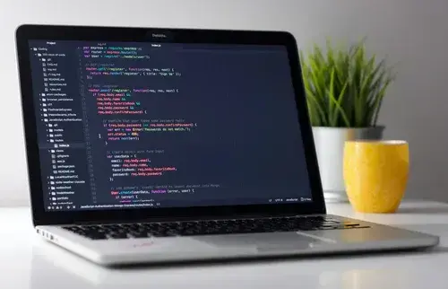

In computer programming, a placeholder is a character, word, or string of characters that temporarily takes the place of the final data. For example, a programmer may know that she needs a certain number of values or variables but doesn't yet know what to input. She can use a placeholder as a temporary solution until a proper value or variable can be assigned.
A placeholder in programming code may also indicate where specific code needs to be added, but the programmer has not yet written the code. The placeholder reminds the programmer where to add code or can let other programmers know that additional code still needs to be added in general.
Placeholders may also be commented out to prevent the computer program from executing part of the code.
